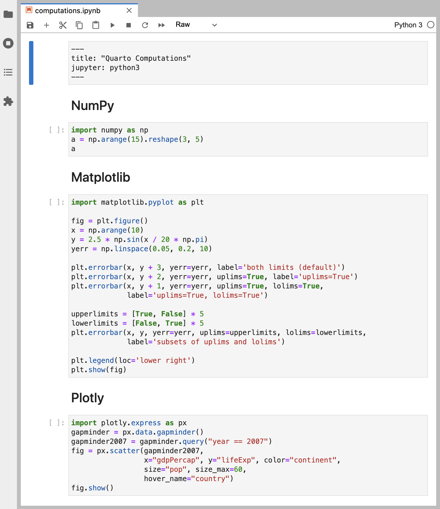
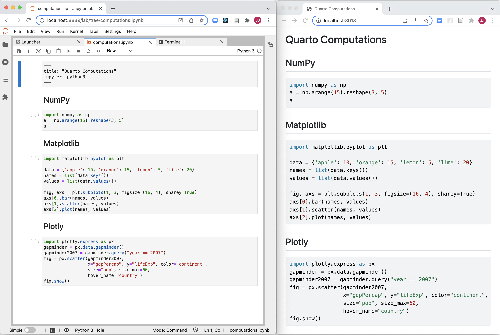
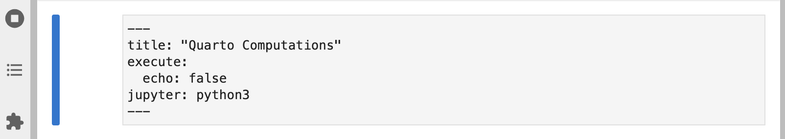
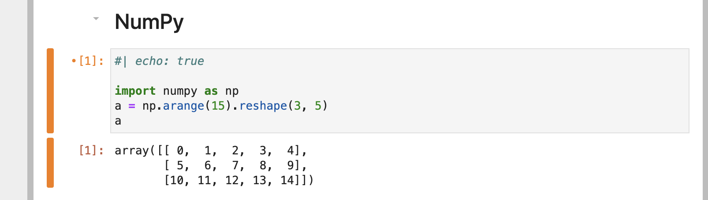
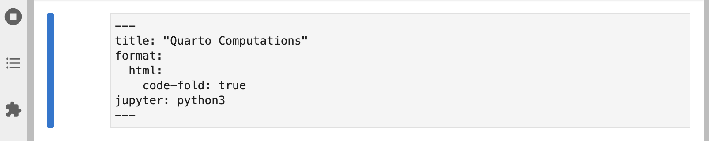
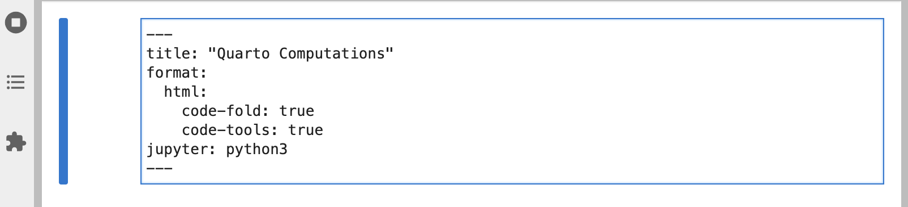

Tutorial: Computations
Choose your tool
Overview
Quarto has a wide variety of options available for controlling how code and computational output appear within rendered documents. In this tutorial we’ll take a simple notebook that has some numeric output and plots and cover how to apply these options.
If you want to follow along step-by-step in your own environment, download this notebook:
Create a new directory to work within and copy the notebook into the directory. Switch to this directory in a terminal then then open Jupyter Lab so we can start working with the notebook:
| Platform | Command |
|---|---|
| Mac/Linux | |
| Windows | |
Here’s the notebook as we start out (note that none of the cells are executed yet):

Create a new Terminal within Jupyter Lab that you’ll use for Quarto commands:

Finally, run quarto preview in the terminal and position Jupyter Lab side-by-side with the browser showing the preview:
quarto preview computations.ipynb
Go ahead and run all of the cells and then save the notebook—the preview in the browser should update with all of the output.
Cell Output
All of the code in the notebook is displayed within the rendered document. However, for some documents you may want to hide all of the code and just show the output. Let’s go ahead and specify echo: false within the document execute options to prevent code from being printed:

Save the notebook after making this change. The preview will update to show the output with no code:

You might want to selectively enable code echo for some cells. To do this add the echo: true cell option. Try this with the NumPy cell:

Save the notebook and note that the code is now included for the NumPy cell:

There are lots of other options available for cell output. See the Jupyter Cell Options documentation for additional details.
Code Folding
Rather than hiding code entirely, you might want to fold it and allow readers to show it at their discretion . You can do this via the code-fold option. Remove the echo option we previously added and add the code-fold HTML format option:

Save the notebook. Now a “Code” widget is available above the output of each cell:

You can also provide global control over code folding. Try adding code-tools: true to the HTML format options:

Save the notebook—a code menu appears at the top right of the document that provides global control over showing and hiding code.

Figures
Let’s improve the appearance of our Matplotlib output. It could certainly stand to be wider, and it would be nice to provide a caption and a label for cross-referencing.
Go ahead and modify the Matplotlib cell to include label and fig-cap options as well as a call to fig.set_size_inches() to set a larger figure size with a wider aspect ratio:

Execute the cell to see the updated plot. Then, save the notebook so that the Quarto preview is updated:

Multiple Figures
The Plotly cell visualizes GDP and life expectancy data from a single year (2007). Let’s plot another year side-by-side for comparison and add some captions and subcaptions. Since this will produce a wider visualization we’ll also use the column option to lay it out across the entire page (rather than being constrained to the body text column).
There are quite a few changes to this cell. Copy and paste the below into the notebook if you want to try these changes locally:
#| label: fig-gapminder
#| fig-cap: |
#| Life Expectancy and GDP
#| (Data from World Bank via gapminder.org)
#| fig-subcap:
#| - "Gapminder: 1957"
#| - "Gapminder: 2007"
#| layout-ncol: 2
#| column: page
import plotly.express as px
gapminder = px.data.gapminder()
def gapminder_plot(year):
gapminderYear = gapminder.query("year == " +
str(year))
fig = px.scatter(gapminderYear,
x="gdpPercap", y="lifeExp",
size="pop", size_max=60,
hover_name="country")
fig.show()
gapminder_plot(1957)
gapminder_plot(2007)Run the modfied cell then save the notebook. The preview will update as follows:

There are a few new options used in this example including fig-subcap, layout-ncol, and column See the articles on Figure Layout and Article Layout for additional details on these and other option related to figures and layout.
Overview
Quarto supports executable code blocks within markdown. This allows you to create fully reproducible documents and reports—the code required to produce your output is part of the document itself, and is automatically re-run whenever the document is rendered.
In this tutorial we’ll show you how to author fully reproducible computational documents with Quarto in RStudio.
Controlling output
- echo, warning, include, error
- fenced-echo go here? If you ever had to teach… https://quarto.org/docs/computations/running-code.html#fenced-echo
Code blocks
- code-fold
- code-link!!
- code-line-numbers (also used for highlighting)
Figures
- fig-width and fig-height
- fig-cap (can you do referencing from here??)
- fig-alt (link to writing good alt text resource)
Tables
Maybe a gt example would look nice and can show caption?
Inline code
https://quarto.org/docs/computations/running-code.html#knitr
Caching
- under
executein YAML - or chunk by chunk
- link to https://yihui.org/knitr/demo/cache/ for more info
Global options?
- maybe mention here?
Next Up
You’ve now covered the basics of customizing the behavior and output of executable code in Quarto documents.
Next, check out the the Authoring Tutorial to learn more about output formats and technical writing features like citations, crossrefs, and advanced layout.